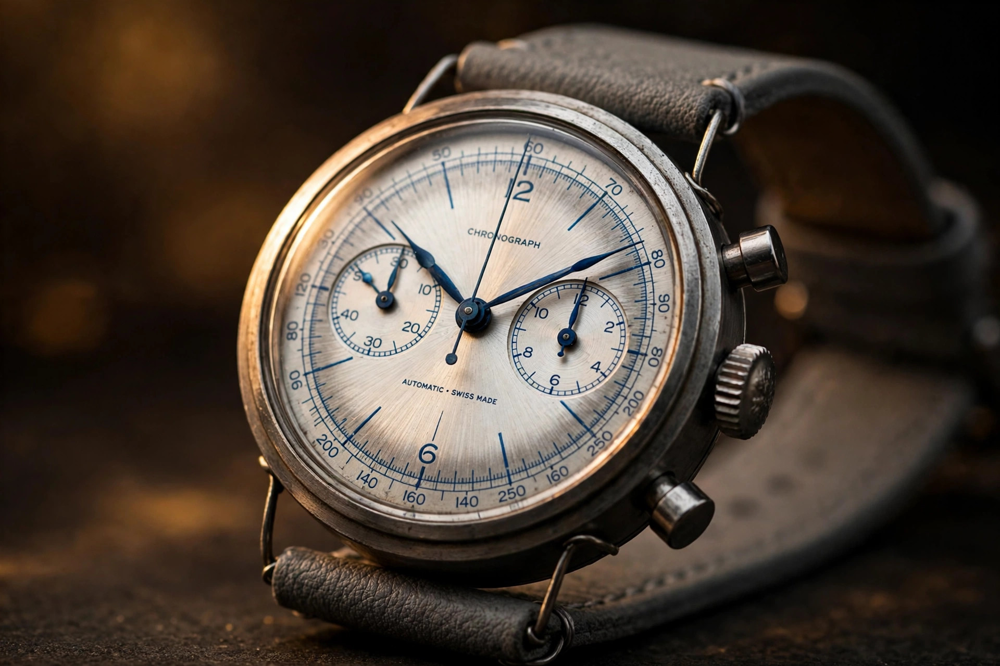

Moser’s Own Chronograph Couldn’t Build This Watch

Moser’s chronographs come from inside the family. Jean-Marc Wiederrecht’s Agenhor builds the Agengraph, the integrated chronograph inside the Streamliner and Endeavour lines, and MELB Group, which owns Moser, owns Agenhor too. So when Moser announced its first Heritage chronograph on Monday, November 2, 2026, the surprise was not the watch but the movement inside it.
Reference 8220-1200, the Heritage Chronograph White Fumé, runs on the HMC 220, Moser’s automatic manufacture calibre, with a chronograph module by Dubois Dépraz bolted on top. Fifty-one jewels, three hertz, seventy-two hours of reserve. A module, not an integrated chronograph, in a watch from a brand that owns an integrated chronograph maker. That looks like a step backward until you look at the dial.
The Dial Wrote the Spec Sheet
Moser’s Heritage line is the company’s archive made wearable. It debuted with retailer Bucherer in 2018 as a 1920s pilot’s watch look, drum-shaped case and wire-thin lugs, and it has since carried time-only, tourbillon, dual-time, and perpetual-calendar movements. None of those needed subdials, but a chronograph in the 1940s idiom does.
Mid-century Moser chronographs put their counters on the dial in the open, two registers side by side, and the new watch follows them exactly. A 45-minute counter sits at 3 o’clock and running seconds at 9. Large Arabic numerals ring a white fumé sunburst dial, every printed element in blue, with a double tachymeter scale and the brand’s 1947 logo. This is a bi-compax layout, and it is the whole point of the watch.
It is also a layout the Agengraph cannot build. Moser’s integrated chronograph uses a central-display architecture, with elapsed time read from the centre rather than from subdials. Monochrome states the constraint plainly: the classic dial implies the presence of subdials, something the Agengraph cannot do. No amount of finishing or re-engineering changes that. Architecture is destiny, and the Agengraph’s architecture points at the centre of the dial.
So Moser went outside, to Dubois Dépraz, the La Chaux-de-Fonds module specialist, which supplies the chronograph works that Moser fits to its own HMC 220 base calibre. There is precedent inside the company for exactly this move. The Endeavour Chronograph Compax, a limited edition made with Massena LAB, used the same concept, a traditional module on an in-house automatic, to get a classic dial the Agengraph could not deliver. Heritage is the second time Moser has chosen the dial over the movement, and the first time it has done so in its vintage line.
Notice what this reverses. Watch brands usually design a movement and then dress it. Here the dial came first and the movement followed, even when following meant buying the complication from a supplier while owning a chronograph maker. That is a real decision with a real cost, and Moser paid it in public.
What the Module Costs
First, thickness. At 13.8 mm tall in a 42 mm steel case, the Heritage Chronograph carries the module stack where you can feel it. Its sibling from the same launch, the Heritage Centre Seconds Espresso Fumé, measures 11.1 mm in the same case diameter with the same drum profile and wire lugs. Subtract one from the other and the module stack costs 2.7 mm. That is the visible price of subdials, and it is not small. A 13.8 mm watch in 2026 reads as thick, whatever the dial says.
Second, jewels. Fifty-one of them sit in the chronograph against 27 in its three-hand sibling’s HMC 200 base. Simple subtraction puts roughly 24 jewels in the module itself, which is a lot of small engineering sitting on top of the base calibre. Every one of those jewels is a pivot that has to be oiled, adjusted, and eventually serviced, and the module adds a second service path alongside the base movement. Moser’s finishing, a darkened rotor with double stripes, dresses the assembly from the back, but the stack is what it is.
Third, nothing in the reserve. Despite the module’s drag, the HMC 220 still delivers a full 72 hours, running at 3 hertz with a Straumann hairspring and a bi-directional pawl winding system. At 21,600 vibrations per hour, the chronograph seconds hand advances six steps a second, each step a sixth of a second, which is coarse against a 4-hertz or 5-hertz chronograph and honest about it. A slower beat is a longer reserve and a calmer hand. Moser picked the reserve.
Wearability is the open question. Moser publishes no lug-to-lug figure for this watch, and the number matters more than the 42 mm diameter. Wire lugs on a drum case can wear long or short depending on their sweep, and a 13.8 mm case on a leather strap sits high on the wrist. Anyone considering one should try it on, or at least measure against a watch they already own. Diameter alone will not tell you how this one wears.
A 1940s Instrument, Built in 2026
Look past the movement argument and the watch is a careful piece of period engineering. The case keeps the Heritage shape, a round pocket-watch profile on tapered wire lugs, the form from the era when pocket watches were being adapted for the wrist. Pump pushers flank a notched onion crown engraved with an M. Two sapphire crystals front and back frame the dial and the movement.
Blue does the work on the dial. Numerals, tachymeter scale, chronograph graduations, and subdial markings are all printed in blue against the silvery-white sunburst fumé, with the smoked effect at the periphery kept deliberately discreet. Moser’s fumé dials are usually dramatic, fading hard toward black at the edge. This one fades toward silver, which suits a watch imitating an era when dials were printed, not coated. Blued sword-shaped hands carry Super-LumiNova, as do the hour numerals, so the vintage look does not come at the cost of reading the watch in the dark.
Then there is the double tachymeter, the most interesting piece of instrument design on the dial. A single tachymeter scale measures speed over a fixed distance, usually a kilometre, and a single scale cannot cover both a fast car and a slow one with any precision. Two scales, one running from 300 down to 30 kilometres per hour, let the wearer time anything from a highway run to a walking pace. It is a 1940s solution to a real measurement problem, and it happens to look wonderful.
Grey kudu leather, hand-stitched with grey thread, closes the period brief. Kudu is an antelope hide, tougher and more heavily grained than calf, and it takes dye unevenly, which means no two straps age alike. A steel pin buckle with the engraved logo finishes it. Nothing here is trying to be a sports watch. Everything is trying to be an instrument.
The Price of a Hundred
One hundred pieces at CHF 29,200, EUR 34,100, or USD 34,100: that is the whole commercial story, and it needs one clarification before anything else. Moser’s own page lists CHF 27,000 excluding VAT, which looks like a lower price until you do the arithmetic. Switzerland’s VAT rate is 8.1 percent. CHF 27,000 times 1.081 comes to CHF 29,187, which rounds to the CHF 29,200 quoted elsewhere. Same watch, different tax bases, no discrepancy.
So what does $34,100 buy: not an integrated chronograph, and not thinness. It buys the dial, the fumé, the finishing, and scarcity: one of a hundred, in a line Moser has never put a chronograph in before. Its three-hand sibling, the Centre Seconds Espresso Fumé, costs $18,300 for 200 pieces. The chronograph costs nearly double its own sibling for the module and the dial layout. That premium is the market’s way of pricing a first.
Honest buyers should weigh that against the wider market, where the same money buys integrated chronographs from several serious makers, some of them thinner, some of them with in-house column wheels and vertical clutches. None of them will have this dial. None of them will be one of a hundred Mosers. Whether that trade is worth it depends on whether you are buying a chronograph or buying a Moser, and this watch is unambiguously the second thing.
Counterargument: The Case Against the Module
Purists will call the module the wrong answer, and they have a case. A modular chronograph is thicker than an integrated one, it adds a second mechanism to service, and at $34,100 the buyer is paying integrated money for bolted-on engineering. Moser’s owner owns Agenhor. It could have built an integrated bi-compax chronograph, or adapted the Agengraph, or waited. Choosing a supplier module looks like a shortcut, and the 13.8 mm case is the evidence.
Fair. But the alternative was not a better Moser chronograph. It was no Heritage chronograph at all, or a Heritage chronograph with a central-display dial that betrayed the 1940s brief. Adapting the Agengraph to subdials would mean redesigning its architecture, which is another way of saying building a new movement, and Moser evidently decided the dial was worth a module rather than a new calibre program. Modules also have a quiet service advantage: Dubois Dépraz movements are a known quantity for watchmakers everywhere, where a brand-new integrated calibre is a known quantity only at its maker. For a 100-piece edition, factory service is the realistic path either way, so the theoretical service penalty matters less than the spec sheet suggests.
Thickness is the harder charge to answer, and Moser does not really try. The watch is 13.8 mm because the module sits on the base calibre, and no finishing trick hides that. Buyers who care about thinness should buy the Centre Seconds sibling at 11.1 mm and skip the chronograph entirely. This watch is for buyers who care about the dial more than the profile.
Questions, Answered
Why did Moser use a Dubois Dépraz module instead of its own Agengraph chronograph? The Agengraph, Moser’s integrated chronograph built by Agenhor, uses a central-display architecture and cannot produce subdials. The Heritage Chronograph’s 1940s bi-compax dial needs two subdials, a 45-minute counter at 3 o’clock and running seconds at 9 o’clock. To get that layout, Moser fitted a Dubois Dépraz chronograph module on top of its HMC 220 automatic calibre instead.
What does the chronograph module cost in thickness? The Heritage Chronograph measures 13.8 mm thick, against 11.1 mm for its three-hand sibling, the Heritage Centre Seconds Espresso Fumé, in the same 42 mm steel case. The 2.7 mm difference is the module stack sitting on top of the HMC 220 base calibre.
How much is it, and how many are being made? It is limited to 100 pieces, priced at CHF 29,200, EUR 34,100, or USD 34,100. Moser’s own page lists CHF 27,000 excluding VAT; at Switzerland’s 8.1 percent VAT rate that comes to CHF 29,187, which reconciles with the CHF 29,200 figure, so the two prices describe the same watch on different tax bases.
What is the double tachymeter scale for? The dial carries two tachymeter scales covering 300 down to 30 kilometres per hour, a 1940s instrument detail. A single tachymeter scale cannot resolve both highway speeds and slow speeds legibly, so the second scale lets the wearer time anything from a fast car to a walking pace over a measured kilometre.
Is the Heritage Chronograph water resistant? No water-resistance figure appears in Moser’s published specifications or in the launch coverage reviewed for this article. With a grey kudu leather strap, pump pushers, and a dress-chronograph brief, it should be treated as an instrument for timing, not for swimming.
Bottom Line
Moser had the harder movement in-house and used the simpler one instead, because the dial it wanted could not be built any other way. The module cost 2.7 mm and a purist argument. It bought the only Heritage chronograph Moser has ever made.
Specifications: H. Moser and Cie Heritage Chronograph White Fumé, November 2026
| Reference | 8220-1200 |
| Case | 42.00 mm x 13.80 mm, stainless steel, drum-shaped with tapered wire lugs; two sapphire crystals; notched onion crown engraved with M; pump pushers |
| Dial | White fumé sunburst with discreet smoked periphery; blue printed numerals, tachymeter scale, chronograph and subdial graduations; large Arabic numerals; blued sword hands with Super-LumiNova; 1947 Moser logo |
| Layout | Bi-compax: 45-minute chronograph counter at 3 o’clock, small seconds at 9 o’clock, central chronograph seconds; double tachymeter scale, 300 to 30 kph |
| Movement | HMC 220 automatic manufacture calibre with Dubois Dépraz chronograph module; 51 jewels; 21,600 vph (3 Hz); 72-hour power reserve; Straumann hairspring; bi-directional pawl winding system; darkened rotor with double stripes |
| Strap | Grey kudu leather, hand-stitched with grey thread; steel pin buckle with engraved H. Moser & Cie. logo |
| Edition | Limited to 100 pieces |
| Price | CHF 29,200 / EUR 34,100 / USD 34,100; CHF 27,000 excluding VAT on Moser’s own page |
| Sibling | Heritage Centre Seconds Espresso Fumé, ref. 8200-1207: 42 mm x 11.1 mm, HMC 200, 27 jewels, 72-hour reserve, Globolight numerals, 200 pieces, CHF 15,700 / USD 18,300 |
| Announced | November 2, 2026 |
| Not published | Lug-to-lug measurement; water-resistance rating; accuracy figure; Dubois Dépraz module reference number |
Sources & Methodology
Launch facts, specifications, and the Agengraph constraint from Monochrome (November 2, 2026), with the Massena LAB precedent, the Heritage line history, and the module details from the same report: Monochrome, First Look: H. Moser Drops Two Heritage Models. Layout and functions corroborated by Watchonista: Heritage Chronograph White Fumé. Subdial positions, strap, and price corroborated by Hypebeast: H. Moser Heritage Chronograph and Centre Seconds Fumé. The CHF 27,000 excluding-VAT figure and the price-basis caution from Holden’s Watch Desk: Moser’s white-and-blue Heritage chronograph gets the numerals right. Pump pushers, onion crown, and caseback engraving from DLMAG: Moser’s Heritage line gets its first chronograph. Sibling specifications and regional pricing from Worn & Wound: Moser Introduces a Pair of Limited Editions in their Heritage Collection. The 2.7 mm thickness difference, the roughly 24-jewel module contribution, the CHF 29,187 VAT arithmetic, and the six-steps-per-second chronograph hand are the author’s calculations from the published figures, not manufacturer claims. Agenhor’s engineering is discussed further in this site’s article on the AgenClutch flyback. The author has not handled this watch; no independent hands-on coverage had appeared as of November 20, 2026, and figures resting on a single outlet are attributed to that outlet in the body.